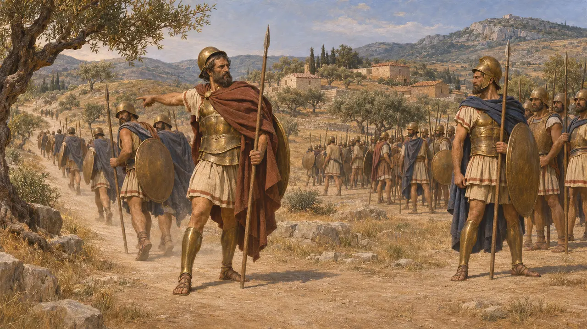
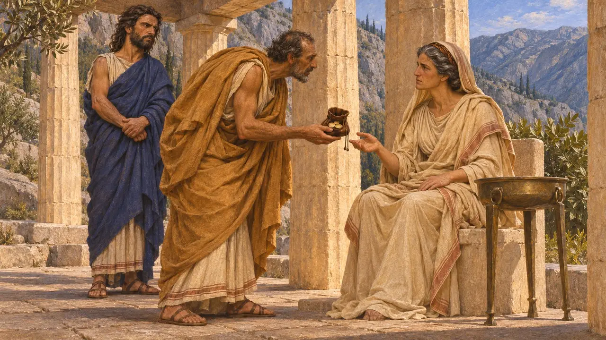
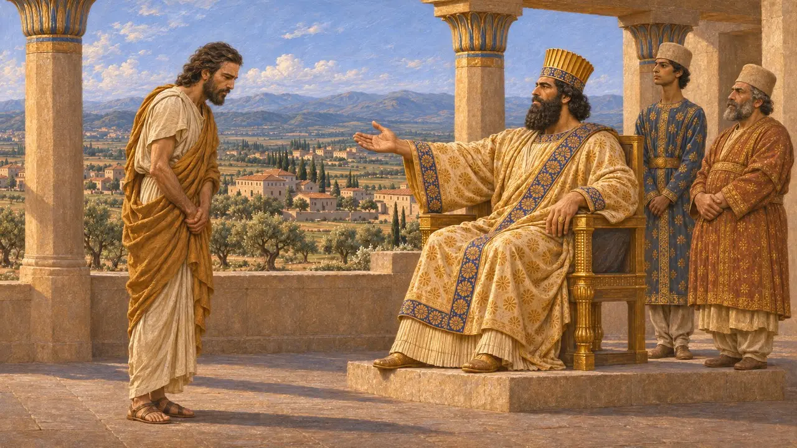
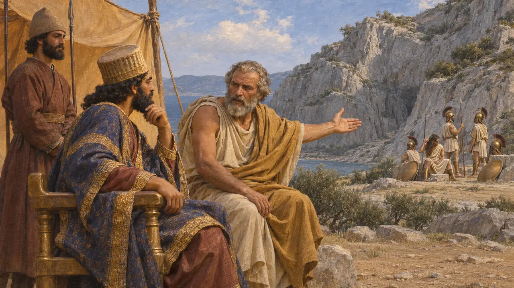
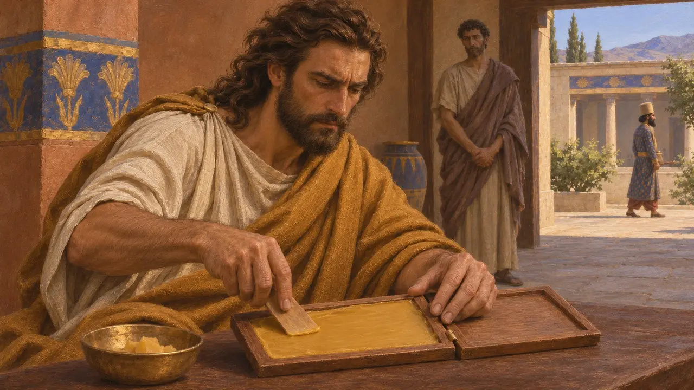
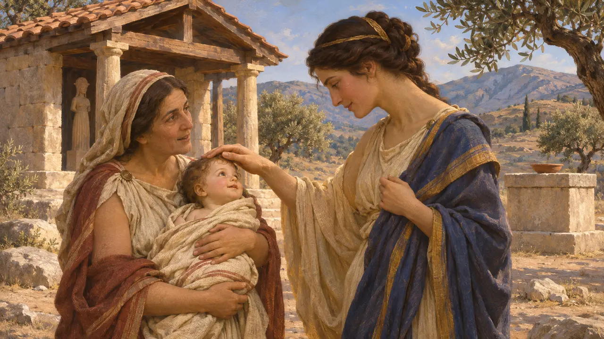

デマラトスは紀元前491年頃までスパルタの2人の王の一人であったが、同僚の王クレオメネスによって廃位された。彼はダレイオスのもとへ亡命してアナトリア西部に領地を与えられ、ヘロドトスによれば、紀元前480年にはギリシア、とりわけスパルタの流儀に通じた助言者としてクセルクセスに従軍した。彼について知られていることはほぼすべてヘロドトスに由来し、ペルシアの文書に彼の名は見えない。
ゲームでは： 本作ではデマラトスは年代記の注記にのみ登場し、スパルタ人はクセルクセスの臣民が王を恐れる以上に法を恐れると王に語った亡命者として描かれる。これはヘロドトス7.104に従ったもので、その演説はおそらくヘロドトス自身の創作である。

クレオメネスに抗した王
古代の記述ヘロドトスによれば、アリストンの子デマラトスは、スパルタの二王制のうち格下の家系であるエウリュポン家の王族であった。紀元前506年頃のアッティカ侵攻の際、彼はアギス家の王クレオメネスと決裂して帰国し、軍は瓦解した。ヘロドトスはこの対立を、両王が同じ遠征を率いてはならないというスパルタの定めと結びつけている。紀元前491年頃、デマラトスがクレオメネスのアイギナに対する措置を妨害したことで、両者の確執は再燃した。
Herodotus 5.75; 6.50-51; 6.61

買収された神託による廃位
古代の記述ヘロドトスによれば、クレオメネスはレオテュキデスを後押しした。レオテュキデスは、デマラトスがアリストンの実子ではないと主張していた。この問題はデルフォイに諮られ、クレオメネスはコボンというデルフォイ人を使って、望む答えを出すよう巫女を説き伏せた。デマラトスは廃され、レオテュキデスが王となった。ヘロドトスの伝えるところでは、後にこの不正が露見すると、コボンは追放され、巫女はその職を解かれたという。
Herodotus 6.63-66

亡命とアジアの領地
古代の記述レオテュキデスはギュムノパイディア祭でデマラトスを侮辱した。デマラトスはその後スパルタを去り、エリスとザキュントスを経て追跡を逃れ、ダレイオスのもとにたどり着いた。ヘロドトスによれば、ダレイオスは彼に土地と諸都市を与えたという。クセノフォンは、紀元前399年に彼の子孫エウリュステネスとプロクレスがなおミュシアのテウトラニアとハリサルナを治めていたと伝えるが、その土地はギリシア遠征に加わった褒賞であったとしている。歴史家たちは、こうした下賜を有用な亡命者に報いるペルシアの常套手段とみなしている。
Herodotus 6.67-70; Xenophon, Hellenica 3.1.6

クセルクセスの遠征における助言者
古代の記述ヘロドトスは幾度かの場面でデマラトスをクセルクセスの傍らに置いている。ドリスコスでは、スパルタ人はいかに不利でも戦うだろうと警告した。テルモピュライの前には、髪を梳くスパルタ人は死の支度をしているのだと説明した。峠が陥落した後には、スパルタの注意をそらすためキュテラ島へ艦船を送るよう進言したが、ヘロドトスによれば、アカイメネスがクセルクセスを説き伏せてこの策を退けさせたという。
Herodotus 7.101-104; 7.209; 7.234-237

演説、王位継承、そして密かな警告
係争中歴史家は、ドリスコスでの対話をおおむねヘロドトス自身の創作とみなしている。法に従う自由なギリシア人と、一人の男に支配される臣民とを対置したものである。ヘロドトスはまた、デマラトスがクセルクセスに王位継承について助言したとしつつ、アトッサの権勢によってクセルクセスはいずれにせよ王になっていただろうと付け加えている。書板の蝋の下に隠してスパルタへ警告を送ったという彼の逸話も疑問視されており、ヘロドトス自身はその動機を疑い、一部の学者は後世の付加とみなしている。
Herodotus 7.3; 7.104; 7.239

誕生の物語
後世の伝説ヘロドトスは、デマラトスの出生をめぐる疑惑の背景として民話を伝えている。彼の母は醜い赤子だったが、ヘレネの社に現れた一人の女によって美しくされ、のちにアリストンが策略を用いて友人アゲトスから彼女を手に入れたという。彼女はデマラトスに、父はアリストンか、さもなくばアリストンの姿をとって彼女のもとに現れた英雄アストラバコスのいずれかだと告げたとされる。この話は記録というより物語の形をとっている。
Herodotus 6.61-63; 6.68-69
出典
- Herodotus 6.61-70
- Herodotus 7.3, 7.101-104, 7.209, 7.234-237, 7.239
- Herodotus 5.75
- Xenophon, Hellenica 3.1.6
- P. Briant, From Cyrus to Alexander, 2002
- P. Cartledge, Sparta and Lakonia, 1979